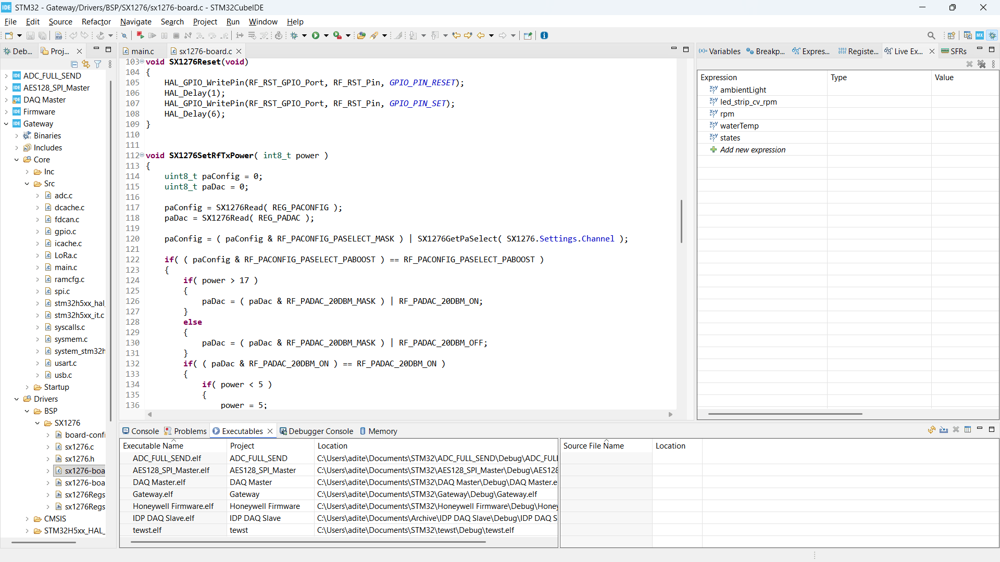
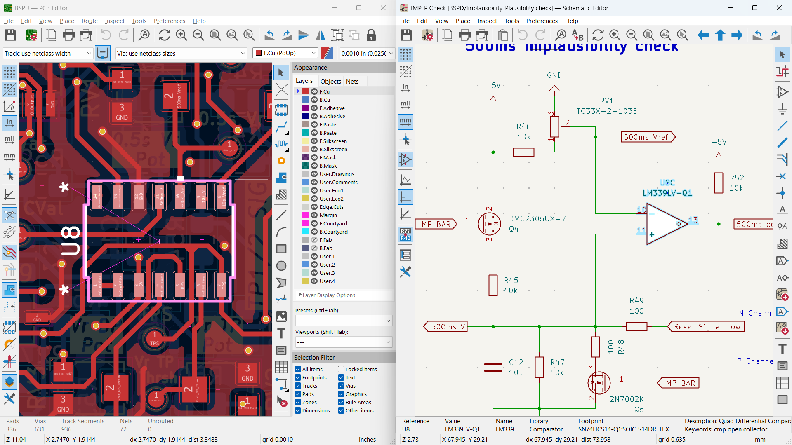
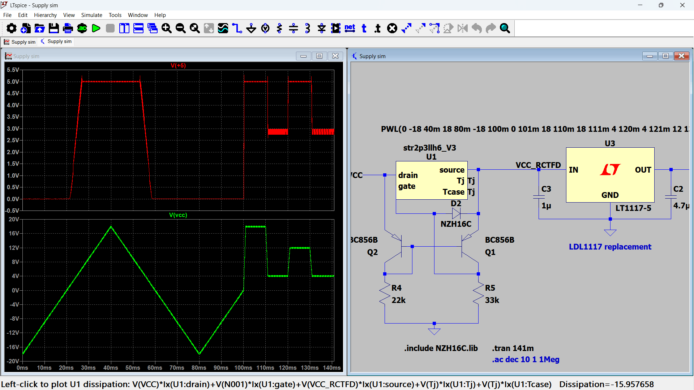
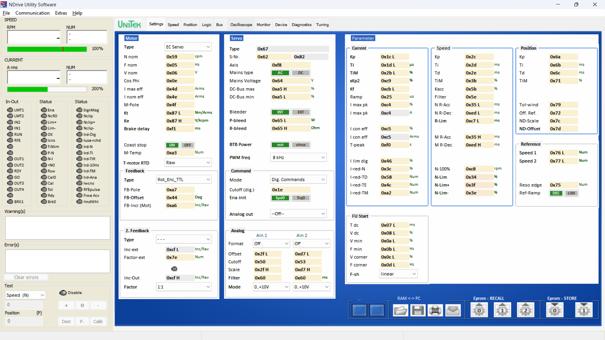
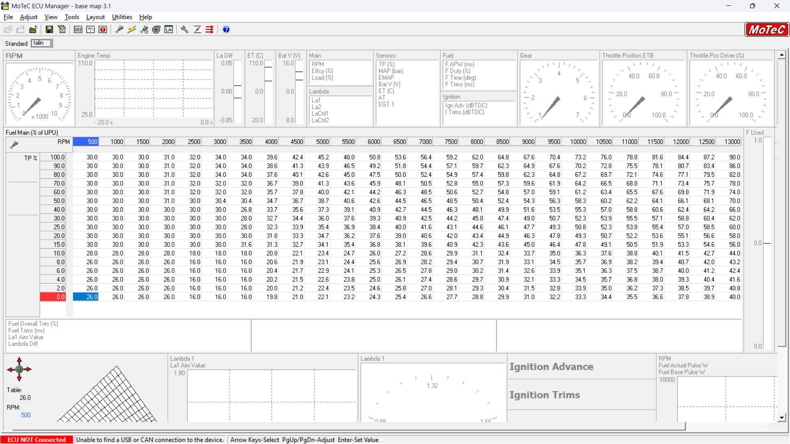

Subsystem
Electrical & Testing
Engineering the car’s electrical nervous system — encompassing custom power electronics, accumulator architecture, embedded firmware, real-time data acquisition, and vehicle control software.
End-to-end development of a distributed vehicle electronics platform comprising 25+ custom ECUs for data acquisition, energy management, control, and safety.
Subsystem Scope & Ownership
The Electrical & Testing subsystem owns the vehicle’s complete electrical and electronic stack — from energy storage and power distribution to sensing, computation, communication, and vehicle-level validation.
- End-to-end low-voltage and high-voltage electrical architecture
- Design and integration of safety-critical HV systems including AMS and protection logic
- Custom electronic control units for sensing, actuation, and vehicle control
- In-house data acquisition hardware, firmware, and communication networks
- System-level testing, validation, and fault diagnosis across operating conditions
This subsystem interfaces directly with all vehicle domains, acting as the integration layer between hardware, software, and on-track performance.
System Architecture Overview
The vehicle electronics are structured around three core systems: the motor controller, the data acquisition and low-voltage electronics, and the accumulator with its associated battery management and safety systems.
- Motor controller responsible for traction power delivery, torque control, and real-time interaction with vehicle-level commands
- DAQ and low-voltage electronics handling sensing, communication, logging, and interface with other vehicle subsystems
- Accumulator system integrating the AMS, protection circuits, and safety logic required for high-voltage energy storage and operation
Testing & Validation
Testing is approached as a progressive validation process rather than a final-stage activity. Each level of integration is validated before advancing to full vehicle operation.
Bench Testing
Component-level verification of sensors, wiring, and protection circuits.
Subsystem Testing
Validation of electrical modules under simulated operating conditions.
Vehicle Integration
System-level testing during static and dynamic vehicle operation.
Track Validation
Data-driven evaluation of reliability, performance, and repeatability.
Tools, Platforms & Technologies
The subsystem develops and validates its electronics using a combination of in-house hardware, embedded software platforms, and automotive communication and analysis tools.
- Custom-designed PCBs for motor control, DAQ/LV electronics, and AMS
- Embedded firmware development on microcontroller-based platforms
- CAN-based communication and diagnostics for inter-system coordination
- In-house data logging, analysis, and visualization pipelines





Engineering Outcomes
The Electrical & Testing subsystem translates detailed design and validation work into measurable vehicle-level confidence, safety, and performance readiness.
- Verified safe operation of the accumulator and high-voltage systems under all operating conditions
- Reliable traction power delivery and control through validated motor controller behavior
- Consistent, high-quality vehicle data enabling informed setup and development decisions
- Reduced integration risk through early detection and isolation of electrical and control issues